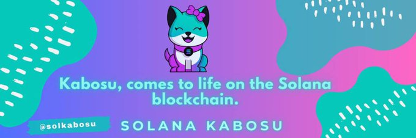

Kabosu comes to life on the Solana blockchain.
$SKC Club !
Kabosu, a female Shiba Inu, gained fame as the iconic face of Doge. Born on November 2nd, 2005, she was rescued by Atsuko Sato in 2008 from a Japanese shelter, saving her from an uncertain fate. Her name, inspired by her round face resembling a kabosu fruit, symbolizes her resilience.
